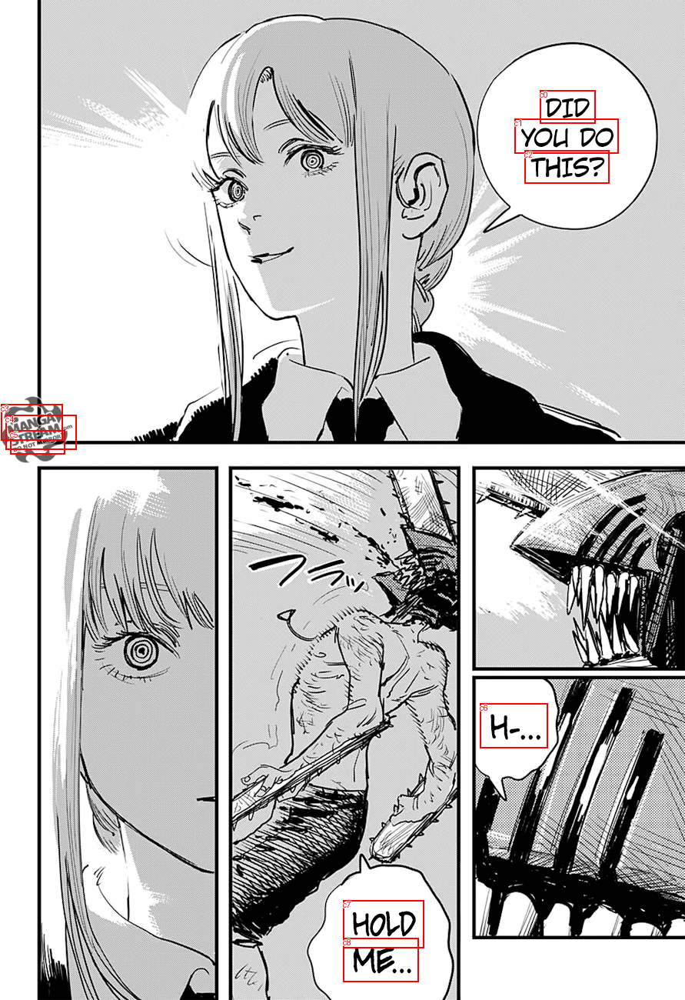
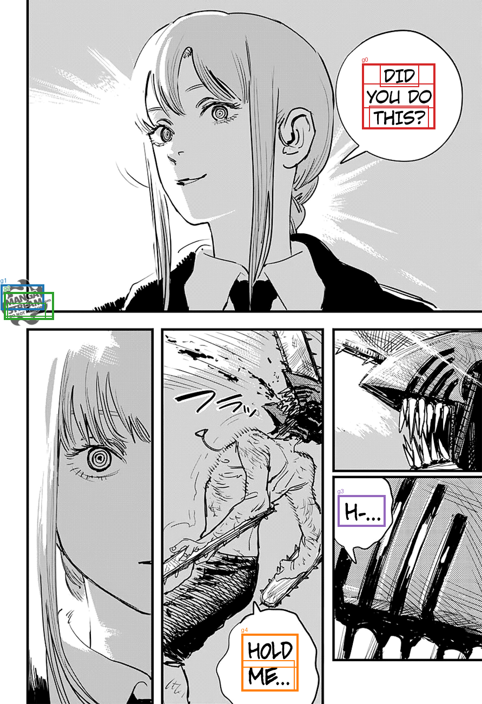

Saved TextExtractionPipeline groups, already filtered and joined. No OCR, filtering, or joining is run by diagnostics. References are comparison only; order is spatial.
Transcript TXT · All candidates and results JSON
DID YOU DO THIS? MANGA STREAM.com DO NOT MIRRORT H-... HOLD ME...


| Group | OCR IDs | Joined text | Target index | Reference text | Similarity |
|---|---|---|---|---|---|
| g0 | c0, c1, c2 | DID YOU DO THIS? | 0 | DID YOU DO THIS? | 1.0 |
| g1 | c3 | MANGA | |||
| g2 | c4, c5 | STREAM.com DO NOT MIRRORT | |||
| g3 | c6 | H-... | 1 | H-... | 1.0 |
| g4 | c7, c8 | HOLD ME... | 2 | HOLD ME... | 1.0 |
[]
[]
[]
[
{
"id": "c0",
"text": "DID",
"score": 0.9999826550483704,
"box": [
702.0,
117.0,
774.0,
160.0
]
},
{
"id": "c1",
"text": "YOU DO",
"score": 0.9268541932106018,
"box": [
669.0,
154.0,
804.0,
199.0
]
},
{
"id": "c2",
"text": "THIS?",
"score": 0.9999527931213379,
"box": [
682.0,
195.0,
792.0,
238.0
]
},
{
"id": "c3",
"text": "MANGA",
"score": 0.9995131492614746,
"box": [
1.0,
525.0,
81.0,
572.0
]
},
{
"id": "c4",
"text": "STREAM.com",
"score": 0.9425943493843079,
"box": [
7.0,
539.0,
99.0,
584.0
]
},
{
"id": "c5",
"text": "DO NOT MIRRORT",
"score": 0.9576393365859985,
"box": [
13.0,
559.0,
84.0,
590.0
]
},
{
"id": "c6",
"text": "H-...",
"score": 0.9916588664054871,
"box": [
624.0,
914.0,
712.0,
972.0
]
},
{
"id": "c7",
"text": "HOLD",
"score": 0.9999634027481079,
"box": [
446.0,
1170.0,
551.0,
1232.0
]
},
{
"id": "c8",
"text": "ME...",
"score": 0.9965474009513855,
"box": [
446.0,
1219.0,
544.0,
1276.0
]
}
]